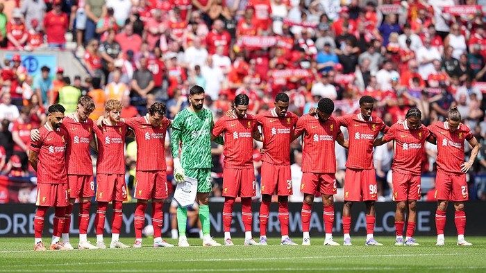
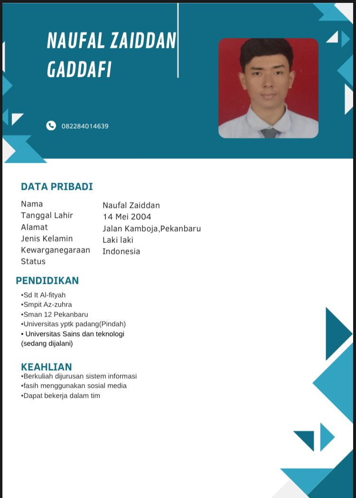

Selamat Datang di Blog Pribadi Naufal Zaidan Gaddafi
Menjelajahi dunia teknologi, dari sistem operasi hingga jaringan komputer yang kompleks.
Tentang SayaArtikel
-
Materi tentang Sistem Operasi Dan Perkembangannya untuk mengetahui lebih dalam cara kerjanya.
Baca Artikel -
Materi Infrastruktur Jaringan Komputer mengajarkan tentang kompleksitas sistem TI.
Baca Artikel -
Materi tentang Bandwidth untuk memahami cara dan penggunaan bandwidth.
Baca Artikel
Berita
Liverpool memulai pramusimnya tanpa Diogo Jota setelah sang pemain dan adiknya tewas dalam kecelakaan mobil. Jota, 28 tahun, telah mencetak 65 gol dalam 183 laga untuk The Reds.
Baca SumberCV

Nama: Naufal Zaidan Gaddafi
Jurusan: Sistem Informasi
Universitas: Universitas Sains dan Teknologi Indonesia